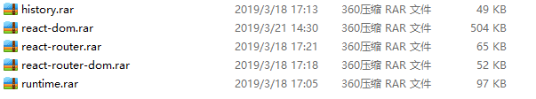

从同事手中接手项目之后。npm install 然后npm start的时候。开始报上图的错误。
解决方法一（比较 愚蠢）
当时找到的解决方法都没有用。然后只能按照报错的路径，从同事那边复制了node_modules下面的文件（报错路径文件替换掉），ran然后在npm start的时候，项目可以正常运行。（下图为当时替换掉的文件）

解决方法二 替换roadhog的版本为 "roadhog": "^2.5.0-beta.4"， 然后删掉node_modules文件夹，然后npm install 再npm start
附方法二的地址
https://github.com/ReactTraining/history/issues/677